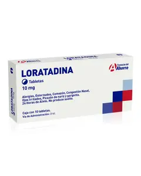

←
ANTIHISTAMÍNICOS H1

Mecanismo de acción
- Son antagonistas competitivos o inversos de los receptores H1 de histamina, que se encuentran en:
- Músculo liso (bronquios, intestino)
- Endotelio vascular
- SNC (algunos cruzan la BHE)
- Al bloquear H1:
- Inhiben los efectos de la histamina: vasodilatación, aumento de la permeabilidad capilar, broncoconstricción, prurito y secreción nasal.
- Algunos también tienen efecto anticolinérgico, sedante o antiemético.
Indicaciones terapéuticas
- Rinitis alérgica, conjuntivitis alérgica.
- Urticaria, dermatitis atópica, prurito.
- Anafilaxia (como tratamiento coadyuvante).
- Alergias alimentarias o medicamentosas.
- Mareo por movimiento, náuseas (especialmente los de 1.ª generación).
- Insomnio (algunos como difenhidramina).
Contraindicaciones
- Hipersensibilidad al fármaco.
- Embarazo y lactancia (según el fármaco).
- Glaucoma de ángulo cerrado (en algunos de 1.ª generación).
- Retención urinaria, hiperplasia prostática (efecto anticolinérgico).
- Niños <2 años (precaución con sedantes).
- Uso de inhibidores de MAO (con clorfenamina, difenhidramina, etc.).
Vía de administración
- Oral: tabletas, jarabe, cápsulas.
- Inyectable: (clorfenamina IM/IV).
- Nasal o oftálmica: algunos preparados específicos.
Posología
- Clorfenamina (1.ª generación):
- Adultos: 4 mg cada 4-6 h (máx. 24 mg/día).
- Niños: 2 mg cada 6 h (>6 años).
- Loratadina (2.ª generación):
- Adultos y >12 años: 10 mg 1 vez al día.
- Niños 2-12 años (<30 kg): 5 mg/día.
- NFexofenadina (2.ª generación):
- Rinitis: 60 mg cada 12 h o 120-180 mg cada 24 h.
- Niños: >6 años: 30 mg cada 12 h.
Reacciones adversas
- 1.ª (e.g. clorfenamina)
- Sedación, boca seca, mareo, visión borrosa, retención urinaria
- 2.ª (e.g. loratadina, fexofenadina)
- Menos sedación, cefalea, náuseas, fatiga, taquicardia (rara)
Interacciones medicamentosas
- Alcohol y depresores del SNC → ↑ sedación (más en 1.ª generación).
- Antidepresivos tricíclicos o antimuscarínicos → ↑ efectos anticolinérgicos.
- Jugo de toronja puede ↓ absorción de fexofenadina.
- Inhibidores de CYP3A4 (ketoconazol, eritromicina) ↑ niveles de loratadina.
Presentación
- Clorfenamina
- Histafrin® (Grossman) - Tabletas 4 mg / Solución oral.
- Periactin® - Tabletas / Gotas / Solución inyectable.
- Loratadina
- Clarityne® (Bayer) - Tabletas 10 mg / Jarabe 1 mg/mL.
- Deslor® - Tabletas y solución.
- Fexofenadina
- Allegra® (Sanofi) - Tabletas 120 y 180 mg.
- Histax® - Tabletas / Suspensión pediátrica.